Systematically testing different combinations of multiple parameter values is an important part of evaluating and optimizing LLM-backed functions. You may want to determine which models perform best while minimizing costs, or which prompts yield the best results.
Experiments allow you to optimize the performance and cost of your tested functions. You can define parameter values for AIP Evals to test in all possible combinations using grid search in separate evaluation suite runs. Afterwards, you can analyze the experiment results to identify the parameter values that performed best.
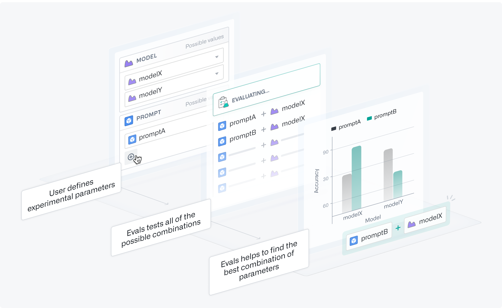
For this example, we have a Logic function that summarizes an article, and we want to determine what model and prompt combination performs best. Note that experiments are not limited to Logic functions.
First, we need to parameterize both the model and prompt. This means adding them as inputs and using them somewhere in the Logic function. In this case, we want to experiment with subtle differences in our prompt phrasing to see which one produces the best summaries. We will use extraPromptContext to append our original prompt with additional context.
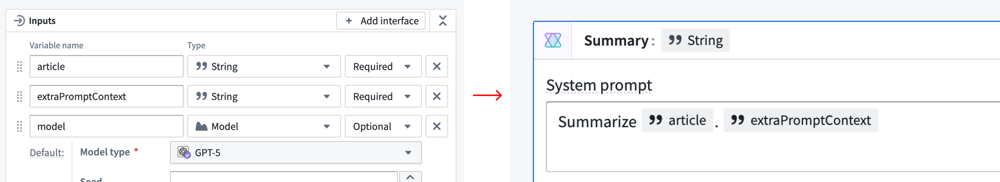
For models, we suggest changing the variable from Required to Optional. You will also need to configure each Use LLM block to use the model variable. You can do this by selecting the model selector in a UseLLM block and navigating to the model variable under the Registered tab.
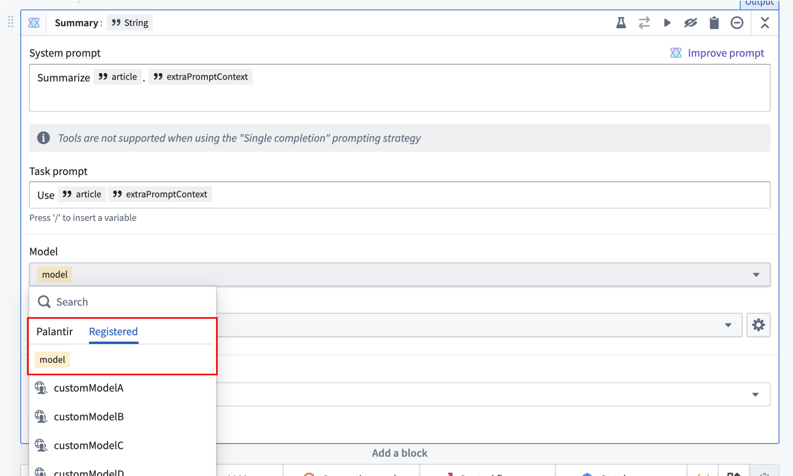
After parameterizing your Logic function, enable experiments by turning on the toggle in the Run configuration dialog.
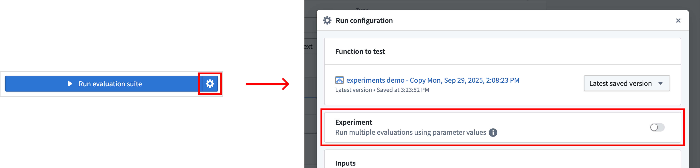
You can name your experiment to help you easily locate results later. Next, add Experiment parameters. These are the parameters you want to test with different values. For each parameter, you can specify multiple value options to explore in your experiment. This will override any existing values that were configured per test in your evaluation suite.
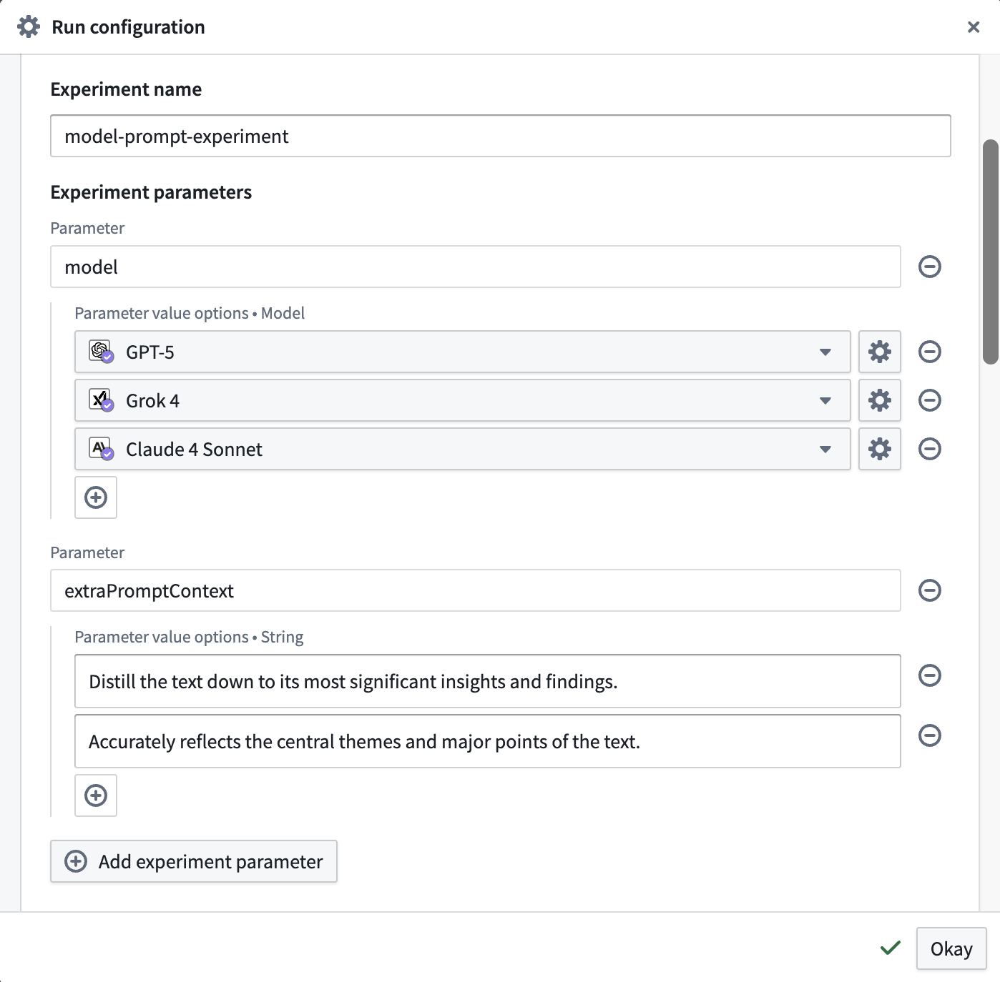
At the bottom of the section, you can see how many evaluation runs will occur and open a preview to see all of the parameter combinations that will be tested in your experiment using grid search.
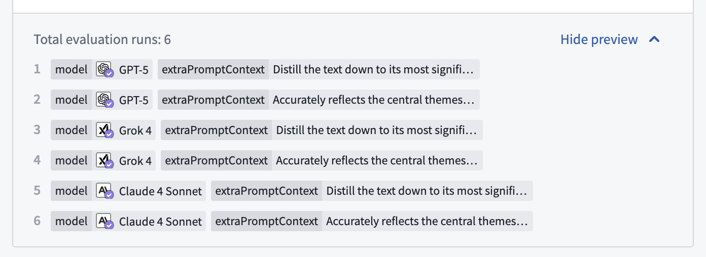
To run the experiment, close the dialog and select the Run experiment option.
When the experiment is complete, select the Results option at the bottom of the side panel. This will take you to the AIP Evals application, where you will be able to analyze the results.
:::callout{theme="neutral"} The Most recent run card in AIP Logic only shows results from the last evaluation run in the set (in this case, run 6 of 6). For a complete view of your results, we recommend accessing them through AIP Evals. :::

In AIP Evals, single evaluation runs and experiment runs can be viewed under the Results > Runs tab. When coming from the Results in AIP Logic (shown above), the Runs table will be automatically filtered down to the experiment that just ran.
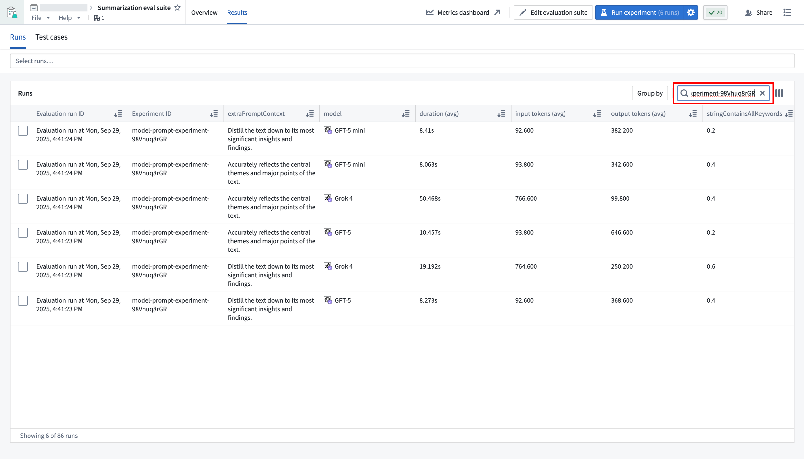
The Group by option allows you to select a column in the table to group runs by and view aggregate metrics for each group. For example, we can group by model to easily compare how each model performed across all metrics.
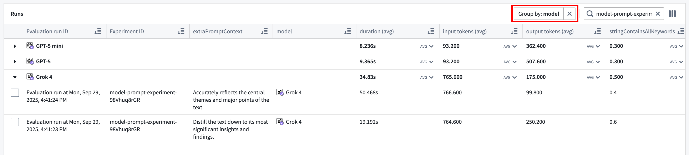
Use the far right column icon in the table header to control which columns are shown in the table.
You can select up to 4 runs from the Runs table to compare, then select the View test cases option or the Test cases sub-tab to continue drilling down into your results.
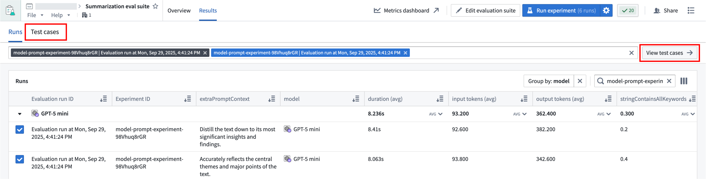
Test case comparisons are useful for debugging how test case outputs and metrics compare across runs, and the possible performance and cost tradeoffs between different parameters. You can hover over the selected run to see the specific parameter values that were used, or find them in the table.
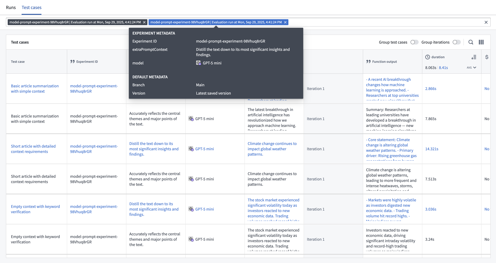
You can change the way rows are displayed by grouping related test cases and/or iterations together.
The column selector can be used to hide and show columns in a way that is meaningful to you. For example, if you want a data-dense view of your metrics, you can choose to hide columns containing inputs and function outputs.
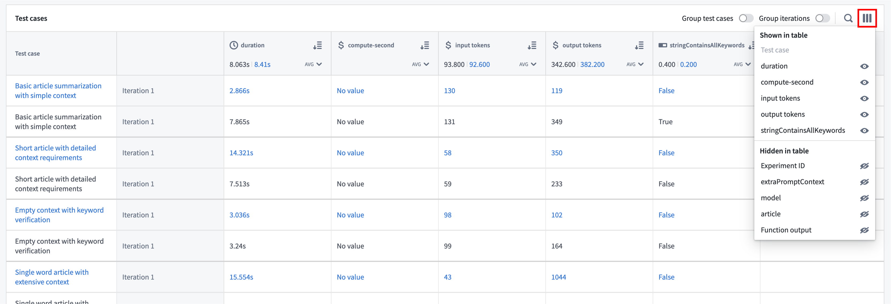
When hovering over a row, an Open option will be displayed, allowing you to drill down even further to understand and debug the execution of the test case.
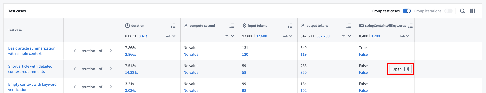
This will open a drawer that displays inputs, outputs, and logs for both the function execution and any evaluators on the suite.
Note that the comparison views will depend on how you have grouped the table. When comparison runs are shown as separate rows, the debugger will only be shown for the run on the row that was selected.
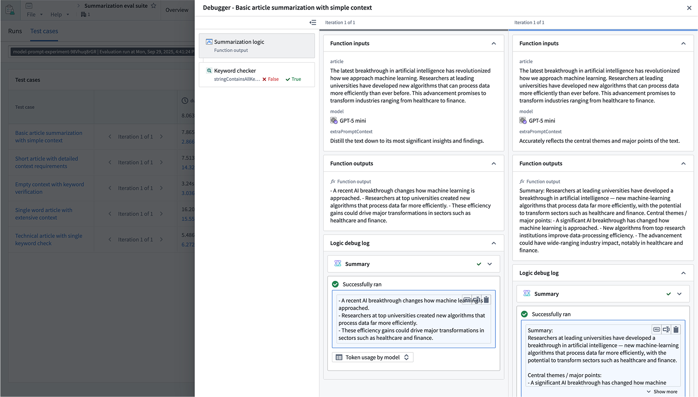